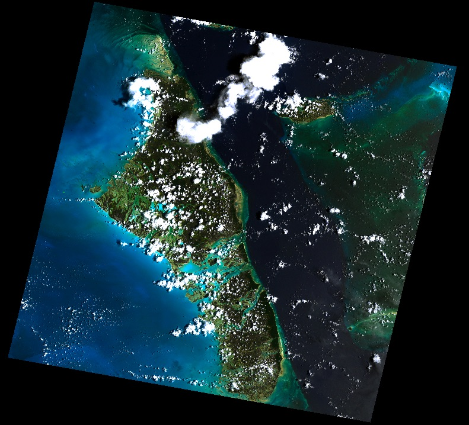

Rasterio Cookbook¶
Todo
Fill out examples of using rasterio to handle tasks from typical GIS and remote sensing workflows.
The Rasterio cookbook is intended to provide in-depth examples of rasterio usage that are not covered by the basic usage in the User’s Manual. Before using code from the cookbook, you should be familar with the basic usage of rasterio; see “Reading Datasets”, “Working with Datasets” and “Writing Datasets” to brush up on the fundamentals.
Generating summary statistics for each band¶
1 2 3 4 5 6 7 8 9 10 11 12 13 14 15 16 17 | from pprint import pprint
import rasterio
import numpy as np
path = "tests/data/RGB.byte.tif"
with rasterio.open(path) as src:
array = src.read()
stats = []
for band in array:
stats.append({
'min': band.min(),
'mean': band.mean(),
'median': np.median(band),
'max': band.max()})
pprint(stats)
|
$ python docs/recipes/band_summary_stats.py
[{'max': 255, 'mean': 29.94772668847656, 'median': 13.0, 'min': 0},
{'max': 255, 'mean': 44.516147889382289, 'median': 30.0, 'min': 0},
{'max': 255, 'mean': 48.113056354742945, 'median': 30.0, 'min': 0}]
Raster algebra¶
Resampling rasters to a different cell size¶
Reproject/warp a raster to a different CRS¶
Reproject to a Transverse Mercator projection, Hawaii zone 3 (ftUS), aka EPSG code 3759.
1 2 3 4 5 6 7 8 9 10 11 12 13 14 15 16 17 18 19 20 21 22 23 24 25 26 27 28 29 30 31 32 33 34 35 36 37 38 39 40 41 42 43 44 45 46 47 48 49 | import numpy as np
import rasterio
from rasterio.warp import calculate_default_transform, reproject, Resampling
from rasterio import crs
rgb = 'tests/data/world.tif'
out = '/tmp/reproj.tif'
# Reproject to NAD83(HARN) / Hawaii zone 3 (ftUS) - Transverse Mercator
dst_crs = crs.from_string("EPSG:3759")
with rasterio.drivers(CHECK_WITH_INVERT_PROJ=True):
with rasterio.open(rgb) as src:
profile = src.profile
# Calculate the ideal dimensions and transformation in the new crs
dst_affine, dst_width, dst_height = calculate_default_transform(
src.crs, dst_crs, src.width, src.height, *src.bounds)
# update the relevant parts of the profile
profile.update({
'crs': dst_crs,
'transform': dst_affine,
'affine': dst_affine,
'width': dst_width,
'height': dst_height
})
# Reproject and write each band
with rasterio.open(out, 'w', **profile) as dst:
for i in range(1, src.count + 1):
src_array = src.read(i)
dst_array = np.empty((dst_height, dst_width), dtype='uint8')
reproject(
# Source parameters
source=src_array,
src_crs=src.crs,
src_transform=src.affine,
# Destination paramaters
destination=dst_array,
dst_transform=dst_affine,
dst_crs=dst_crs,
# Configuration
resampling=Resampling.nearest,
num_threads=2)
dst.write(dst_array, i)
|
$ python docs/recipes/reproject.py
The original image

Warped to EPSG:3759. Notice that the bounds are contrainted to the new projection’s
valid region (CHECK_WITH_INVERT_PROJ=True on line 13) and the new raster is wrapped seamlessly across the anti-meridian.

Raster to polygon features¶
Rasterizing GeoJSON features¶
Masking raster with a polygon feature¶
Using rasterio with fiona, we can open a shapefile, read geometries, and
mask out regions of a raster that are outside the polygons defined in the shapefile.
This shapefile contains a single polygon, a box near the center of the raster, so in this case, our list of geometries is one element long.
Applying the features in the shapefile as a mask on the raster sets all pixels outside
of the features to be zero. Since crop=True in this example, the extent of the raster
is also set to be the extent of the features in the shapefile.
We can then use the updated spatial transform and raster height and width to write the masked raster to a new file.
1 2 3 4 5 6 7 8 9 10 11 12 13 14 15 16 17 18 | import fiona
import rasterio
from rasterio.tools.mask import mask
with fiona.open("tests/data/box.shp", "r") as shapefile:
geoms = [feature["geometry"] for feature in shapefile]
with rasterio.open("tests/data/RGB.byte.tif") as src:
out_image, out_transform = mask(src, geoms, crop=True)
out_meta = src.meta.copy()
out_meta.update({"driver": "GTiff",
"height": out_image.shape[1],
"width": out_image.shape[2],
"transform": out_transform})
with rasterio.open("/tmp/masked.tif", "w", **out_meta) as dest:
dest.write(out_image)
|
$ python docs/recipes/mask_shp.py
The original image with the shapefile overlayed

Masked and cropped to the geometry

Creating valid data bounding polygons¶
Raster to vector line feature¶
Creating raster from numpy array¶
Creating a least cost path¶
Using a scipy filter to smooth a raster¶
This recipe demonstrates scipy’s signal processing filters to manipulate multi-band raster imagery and save the results to a new GeoTIFF. Here we apply a median filter to smooth the image and remove small inclusions (at the expense of some sharpness and detail).
1 2 3 4 5 6 7 8 9 10 11 12 13 14 15 16 | import rasterio
from scipy.signal import medfilt
path = "tests/data/RGB.byte.tif"
output = "/tmp/filtered.tif"
with rasterio.open(path) as src:
array = src.read()
profile = src.profile
# apply a 5x5 median filter to each band
filtered = medfilt(array, (1, 5, 5)).astype('uint8')
# Write to tif, using the same profile as the source
with rasterio.open(output, 'w', **profile) as dst:
dst.write(filtered)
|
$ python docs/recipes/filter.py
The original image

With median filter applied

Using skimage to adjust the saturation of a RGB raster¶
This recipe demonstrates manipulating color with the scikit image color module.
1 2 3 4 5 6 7 8 9 10 11 12 13 14 15 16 17 18 19 20 21 22 23 24 25 26 27 28 29 30 31 32 33 34 35 36 37 38 39 40 41 42 43 44 45 46 47 48 49 50 51 52 53 54 55 | import rasterio
import numpy as np
from skimage.color import rgb2lab, lab2lch, lch2lab, lab2rgb
path = "tests/data/RGB.byte.tif"
output = "/tmp/saturation.tif"
def saturation(arr, sat):
"""Multiple saturation/chroma in LCH color space
Input and output are 3-band RGB scaled 0 to 255
"""
# scale image 0 to 1
arr_norm = arr / 255.0
# Convert colorspace
lch = rgb2lch(arr_norm)
# Adjust chroma, band at index=1
lch[1] = lch[1] * sat
# Convert colorspace and rescale
return (lch2rgb(lch) * 255).astype('uint8')
def rgb2lch(rgb):
"""Convert RBG to LCH colorspace (via LAB)
Input and output are in (bands, cols, rows) order
"""
# reshape for skimage (bands, cols, rows) -> (cols, rows, bands)
srgb = np.swapaxes(rgb, 0, 2)
# convert colorspace
lch = lab2lch(rgb2lab(srgb))
# return in (bands, cols, rows) order
return np.swapaxes(lch, 2, 0)
def lch2rgb(lch):
"""Convert LCH to RGB colorspace (via LAB)
Input and output are in (bands, cols, rows) order
"""
# reshape for skimage (bands, cols, rows) -> (cols, rows, bands)
slch = np.swapaxes(lch, 0, 2)
# convert colorspace
rgb = lab2rgb(lch2lab(slch))
# return in (bands, cols, rows) order
return np.swapaxes(rgb, 2, 0)
with rasterio.open(path) as src:
array = src.read()
profile = src.profile
# Increase color saturation by 60%
array_sat = saturation(array, 1.6)
with rasterio.open(output, 'w', **profile) as dst:
dst.write(array_sat)
|
$ python docs/recipes/saturation.py
The original image
With increased saturation
{kind=link}
Generating a KMZ from a raster¶
A raster can be converted to a KMZ and opened in Google Earth using rasterio to access the raster metadata. Executing
$ python docs/recipes/raster_to_kmz.py
creates the file green_box.tif, which is a green image that extends from longitude -36 to -35 and latitude 74 to 75 in EPSG:4326 projection, and then embeds this raster in a KMZ file green_box.kmz. In Google Earth, we can see the box inside Greenland (screenshot below).